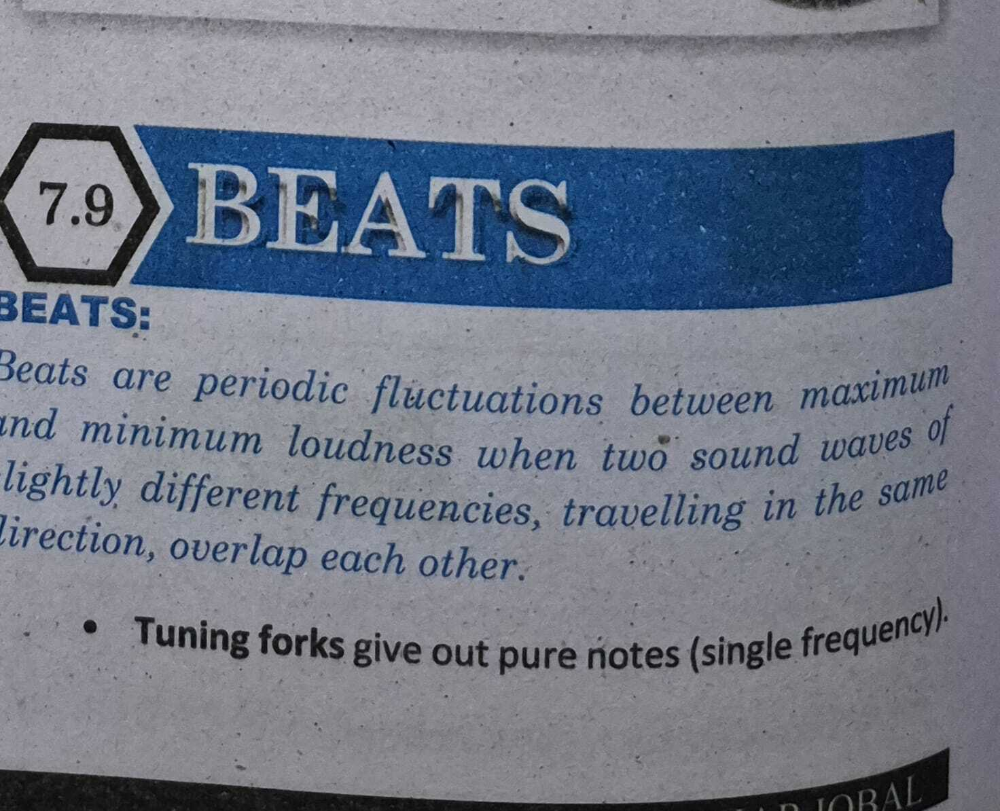

Beat Frequency & Tuning
Textbook p.163 (Right Column) · Constructive/Destructive Interference
TEXTBOOK · § BEATS · p.163
EXPLANATION OF BEAT CYCLE
At instant X:
Displacements are in the same direction → Resultant displacement is
large → Loud sound is
heard.
After ¼ second (Instant Y):
Displacements are in opposite directions → Minimum displacement →
Faint sound or no sound.
After another ¼ second (Instant Z):
Displacements are again in the same direction →
Loud sound again.
BEAT FREQUENCY
During 1 second, the number of beats heard is equal to the difference
between the frequencies of the two sound sources:
f_A = 32 Hz, f_B = 30 Hz (f_A > f_B)
Number of Beats = f_A - f_B = 32 - 30 = 2 Hz
Human Ear Limit: When the
frequency difference is more than 10 Hz, the beats
occur too rapidly for the human ear to distinguish individually.
PRACTICAL APPLICATION: TUNING INSTRUMENTS
One can use beats to tune a string instrument (such
as a piano or violin) by sounding a note against a standard note of
known frequency.
The string is tightened or loosened until the beat rate slows down and
beats disappear completely
(meaning f_A = f_B).
Pictorial Comparison (Longitudinal vs Transverse)
Original Textbook Page

Add ch7_tb_p20.jpg next to this file